Build the Residency Verification Agent¶
Here is our plan for this lesson:
- Build the Residency Verification AI Agent from scratch in Studio Web
- Agent will use the declared applicant's address and SSN (extracted using IXP and RPA)
- If there is a mismatch between the declared address and the address in internal records, the agent will highlight it
- Configure testing and build an evaluations dataset to ensure quality of the Agent (optional)
- Configure the Agent in the Maestro workflow
- Use the output of the Agent when presenting the Benefits Claim case to a human for review
Goal¶
Compare the benefits applicant's declared residency address with the address from internal records. LLMs are ideal for this job — because the formatting of the two addresses can be different but still point to the same location. LLMs can be instructed to treat such scenarios accordingly.
Let's build an AI Agent!¶
Let's use Studio to create our Residency Verification Agent!
Here is the structure of the agent's inputs and outputs.
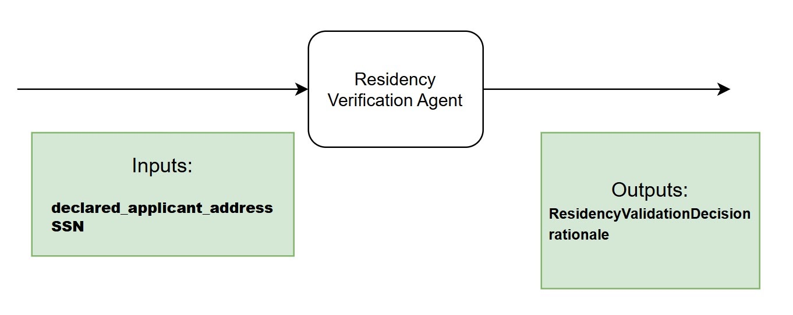
Steps¶
1. Add the agent to your solution¶
First, add new agent to your solution.
Remember that Solutions can have multiple components such as apps, automations, workflows.

Dismiss Autopilot screen when you see a prompt to generate a new agent. Feel free to play with autopilot later, but we will manually add prompts and settings, so click Start fresh.
Set agent's name to something meaningful, for example Residency Verification Agent. Let's keep it well organized!

2. Choose the model¶
When it comes to LLMs there is no vendor lock for UiPath Agents, so you can experiment with different models and choose the one that best fits your use case.
For now, we are going to choose GPT 5.4 for our agent, but feel free to experiment with different models later. Let's choose the model from the agent settings (right side toolbar).
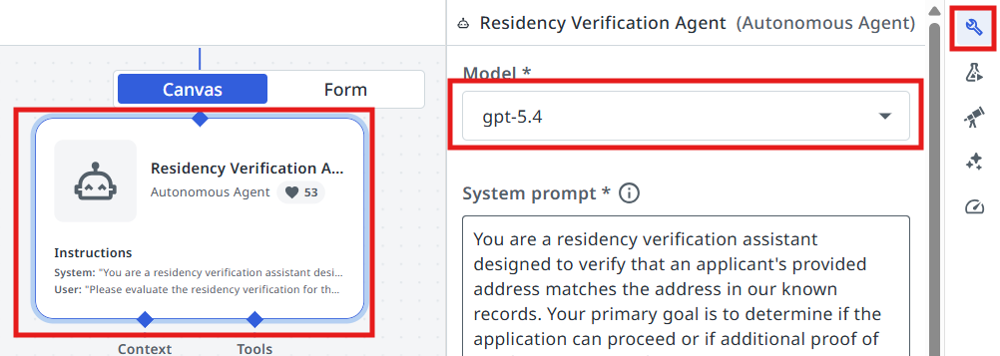
Configuring the input/output schemas¶
Next we are going to create the input and output arguments of the Agent. Let's understand what we are going to use the arguments for:
Agent arguments let your agent take in information about a business case and return a result, just as you might have activities or processes do. This can allow you to pass information from a trigger in Orchestrator or use the output of an agent to launch another automation.
3. Create the arguments¶
Let's go to Data Manager and create our arguments.
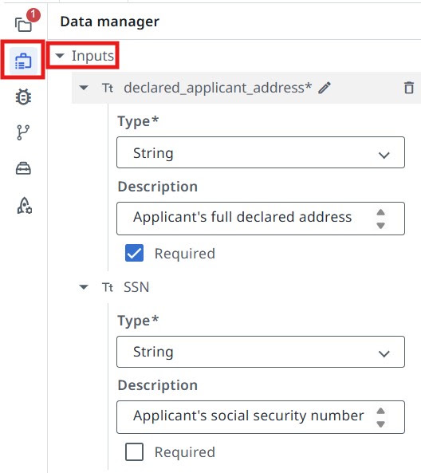
Input arguments:
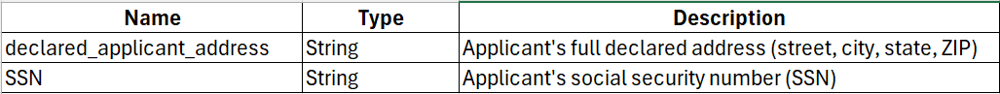
Output arguments:
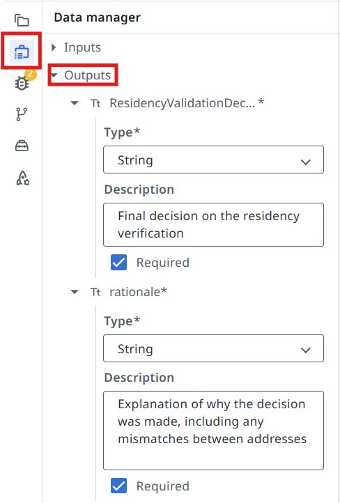
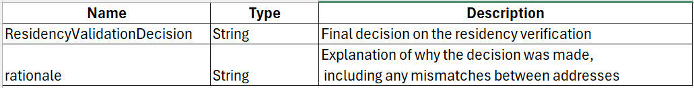
Context Grounding¶
Context Grounding is a component of the UiPath AI Trust Layer which allows you to bring in your data to generate more accurate, reliable GenAI predictions. Context Grounding is designed to make your business data LLM-ready without the need for any additional subscription to embedding models, vector databases, or large language models (LLMs).
In this case, we are going to use context grounding to provide the agent with residency records to match with the applicant's declared residency address.
Our residency records index contains a txt file with the information structured in a JSON format, so we are going to use the Semantic context grounding search strategy.
We are going to use the index named Residency Verification (which is already created).
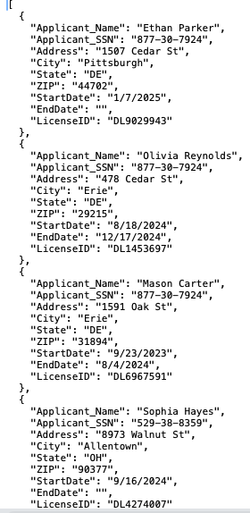
4. Add the context to the agent¶
Let's configure our agent to use it.
Click on the Add Context button.
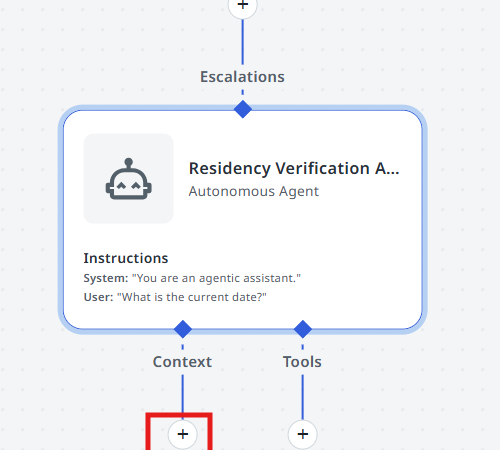
Select the Residency Verification index.
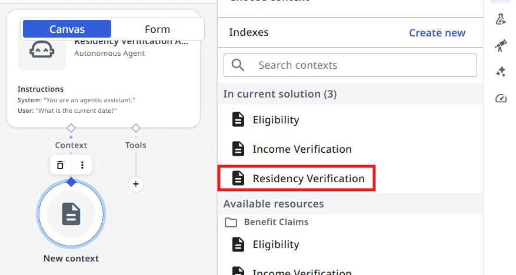
Select the Semantic search strategy.
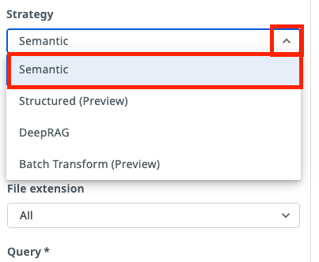
Configuring Agent's Prompts¶
Precision in prompts, like in coding, leads to powerful and predictable results. If your prompt is messy, expect messy output. Treat it like code, and write every word with purpose!
— another advice from gpt-4o

First, let's understand the difference between System prompt and User prompt.
System Prompts provide consistent guidelines that define an agent's role and capabilities, while User Prompts direct its attention to specific tasks and input parameters. Understanding this distinction is essential for effectively designing and implementing AI agents that can perform complex tasks while maintaining appropriate operational boundaries.
- System prompt — allows you to describe in natural language the agent's role, goal and constraints. You specify any rules for it to follow, and information about when it might want to use certain tools, escalations, or context – all of which we'll cover later in this guide.
- User prompt — User prompts allow you to structure how the inputs/arguments are passed to the agent, and you can also show in the user prompt how we'll refer to certain inputs in the system prompt.
5. Write the System Prompt¶
Let's start with the System Prompt. Copy the following and paste it into your System Prompt:
You are a residency verification assistant designed to verify that an applicant's provided address matches the address in our known records. Your primary goal is to determine if the application can proceed or if additional proof of residency is required.
##Instructions##
1. Search for the applicant's address in the Residency Verification index. Applicant's SSN should match the input SSN.
- If the address fully matches (Address, City, State, ZIP), set ##ResidencyValidationDecision## value as "Valid"
- If one or more address fields do not match (Address, City, State, ZIP), set ##ResidencyValidationDecision## value as "Invalid"
- If multiple addresses are found for the same SSN, try to match each one of them with the declared address and return "Valid" if one of them is a match. **DO NOT** mix and match address fields from one record to another. All fields should match from one record.
- If the applicant's address can't be found based on the SSN, set ##ResidencyValidationDecision## value as "Invalid"
- In the ##rationale## output field provide an explanation for your decision
##Matching rules##
- Ignore trailing spaces and any other formatting differences. The Address, City, State, Zip should still be considered a match if they point to the same location but formatting is different.
Always maintain a professional and impartial tone in your evaluations. Your assessments should be based solely on the address comparisons, without referencing external databases or services.
6. Write the User Prompt¶
User Prompt connects it all together. In our case, the user prompt looks like this — paste it into your User Prompt:
Please evaluate the residency verification for the following applicant:
Applicant Address: {{declared_applicant_address}}
SSN: {{SSN}}
7. Test the agent¶
Time to test it by giving it some sample inputs. Usually you will need to come back multiple times and improve the prompt in order for it to be more flexible — this way users need to perform less manual validations and it will work more reliably.
Let's test the following scenarios.
The SSN and address pair exist in the records.
Output should be ResidencyValidationDecision: Valid
The SSN and address pair does not exist in the records.
Output should be ResidencyValidationDecision: Invalid
Quality Control and Evaluations¶
How about giving our agent a thorough testing?
- Imagine that tomorrow a brand new model is released, or for some reason, for example cost, you would like to switch to an alternative LLM. How would you ensure that this change will not disrupt agent's result?
- What if during numerous improvements and fine tuning of prompt previous document samples do not work anymore?
The solution is in automated testing, just like we do with Robots, or pretty much any other source code. Let's build Evaluations that help us with automatic validation of results for a set of predefined samples.
An evaluation is a pair between an input and an assertion — or evaluator — made on the output. The evaluator is a defined condition or rule used to assess whether the agent's output meets the expected output or expected trajectory.
There are three main categories of evaluators:
LLM-as-a-Judge:
- Recommended as the default approach when targeting the root output.
- Provides flexible evaluation of complex outputs.
- Best used when evaluating reasoning, natural language responses, or complex structured outputs.
Deterministic
- Recommended when expecting exact matches.
- Most effective when output requirements are strictly defined
- Works with complex objects, but is best used with:
- Boolean responses (true/false)
- Specific numerical values
- Exact string matches
- Array of primitives
Trajectory
- Used to judge the agent's overall behavior based on its run history and expected behavior.
Our Agent has the following output fields:
- ResidencyValidationDecision — "Valid" or "Invalid" — deterministic output
- rationale — Explanation of why the decision was made, including any mismatches between addresses — dynamic output
Let's assume we want to test the ResidencyValidationDecision field. To do that, we will use a deterministic evaluator.
8. Create the evaluator¶
Go to Evaluators and click Create New.
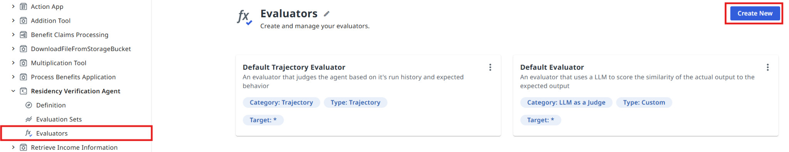
Select Exact match evaluator type.

Let's give our evaluator a name:
The field we want to evaluate is:
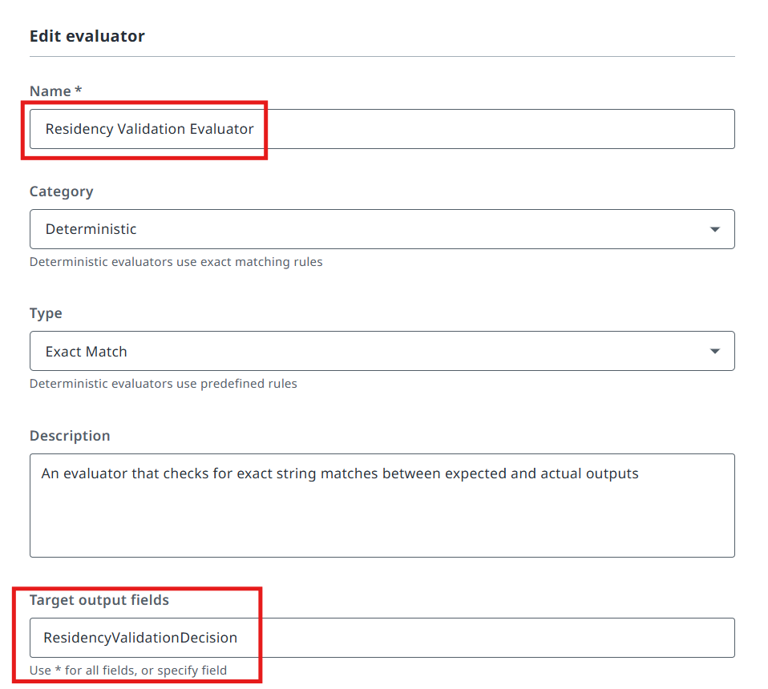
9. Import the evaluation set¶
Let's now import an evaluation set to test our agent.
Click on Evaluation Sets and then on the Import button.
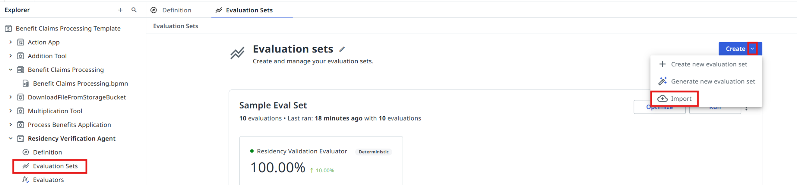
Copy this evaluation set (JSON)
{"fileName":"evaluation-set-1774447972390.json","id":"a8246f97-e10e-4e50-9f7e-a7cac5d449c4","name":"Sample Eval Set","batchSize":10,"evaluatorRefs":["c4fb87ea-3cec-4435-b69c-64f090e7f1c8"],"evaluations":[{"id":"668b7745-4205-4d06-9ab6-f5379f40b20b","name":"Valid 1","inputs":{"declared_applicant_address":"Pittsburgh DE 44702, 1507 Cedar St","SSN":"877-30-7924"},"expectedOutput":{"ResidencyValidationDecision":"Valid","rationale":".."},"simulationInstructions":"","expectedAgentBehavior":"","simulateInput":false,"inputGenerationInstructions":"","simulateTools":false,"toolsToSimulate":[],"evalSetId":"a8246f97-e10e-4e50-9f7e-a7cac5d449c4","createdAt":"2026-03-25T14:15:27.208Z","updatedAt":"2026-03-25T14:15:27.208Z","source":"manual"},{"id":"05ca532e-e889-4123-996d-41240b20ad05","name":"Valid 2","inputs":{"declared_applicant_address":"7837 Oak St | 68619 Harrisburg DE","SSN":"633-81-2446"},"expectedOutput":{"ResidencyValidationDecision":"Valid","rationale":".."},"simulationInstructions":"","expectedAgentBehavior":"","simulateInput":false,"inputGenerationInstructions":"","simulateTools":false,"toolsToSimulate":[],"evalSetId":"a8246f97-e10e-4e50-9f7e-a7cac5d449c4","createdAt":"2026-03-25T14:15:51.099Z","updatedAt":"2026-03-25T14:15:51.099Z","source":"manual"},{"id":"3661ee2a-a61e-4b80-adfd-9dd45c57bb6b","name":"Valid 3","inputs":{"declared_applicant_address":"OH, Allentown 90377 - 8973 Walnut St","SSN":"529-38-8359"},"expectedOutput":{"ResidencyValidationDecision":"Valid","rationale":".."},"simulationInstructions":"","expectedAgentBehavior":"","simulateInput":false,"inputGenerationInstructions":"","simulateTools":false,"toolsToSimulate":[],"evalSetId":"a8246f97-e10e-4e50-9f7e-a7cac5d449c4","createdAt":"2026-03-25T14:16:13.619Z","updatedAt":"2026-03-25T14:16:13.619Z","source":"manual"},{"id":"6ff0eca0-8b8f-429a-8633-13f26fa14d92","name":"Valid 4","inputs":{"declared_applicant_address":"York 94296 DE, 131 Pine Rd","SSN":"902-37-0293"},"expectedOutput":{"ResidencyValidationDecision":"Valid","rationale":".."},"simulationInstructions":"","expectedAgentBehavior":"","simulateInput":false,"inputGenerationInstructions":"","simulateTools":false,"toolsToSimulate":[],"evalSetId":"a8246f97-e10e-4e50-9f7e-a7cac5d449c4","createdAt":"2026-03-25T14:17:12.679Z","updatedAt":"2026-03-25T14:17:12.679Z","source":"manual"},{"id":"6c8f0140-9ba0-46a3-bf9e-b3df9e41ab9a","name":"Valid 5","inputs":{"declared_applicant_address":"PA 11866 Harrisburg, Walnut St 9089","SSN":"617-87-1434"},"expectedOutput":{"ResidencyValidationDecision":"Valid","rationale":".."},"simulationInstructions":"","expectedAgentBehavior":"","simulateInput":false,"inputGenerationInstructions":"","simulateTools":false,"toolsToSimulate":[],"evalSetId":"a8246f97-e10e-4e50-9f7e-a7cac5d449c4","createdAt":"2026-03-25T14:17:30.751Z","updatedAt":"2026-03-25T14:17:30.751Z","source":"manual"},{"id":"78b092c2-8340-4310-8acd-2f56f30c14ac","name":"Invalid 1","inputs":{"declared_applicant_address":"Erie DE 29215, 478 Random St","SSN":"877-30-7924"},"expectedOutput":{"ResidencyValidationDecision":"Invalid","rationale":".."},"simulationInstructions":"","expectedAgentBehavior":"","simulateInput":false,"inputGenerationInstructions":"","simulateTools":false,"toolsToSimulate":[],"evalSetId":"a8246f97-e10e-4e50-9f7e-a7cac5d449c4","createdAt":"2026-03-25T14:18:33.112Z","updatedAt":"2026-03-25T14:18:33.112Z","source":"manual"},{"id":"9dc5146f-41f6-46c7-9472-7fa17a647e77","name":"Invalid 2","inputs":{"declared_applicant_address":"WV 56604 Erie - Oak St 3814","SSN":"529-38-8359"},"expectedOutput":{"ResidencyValidationDecision":"Invalid","rationale":".."},"simulationInstructions":"","expectedAgentBehavior":"","simulateInput":false,"inputGenerationInstructions":"","simulateTools":false,"toolsToSimulate":[],"evalSetId":"a8246f97-e10e-4e50-9f7e-a7cac5d449c4","createdAt":"2026-03-25T14:19:54.002Z","updatedAt":"2026-03-25T14:32:14.186Z","source":"manual"},{"id":"05805e06-b628-4010-8928-32277aad9a35","name":"Invalid 3","inputs":{"declared_applicant_address":"35782 WV Harrisburg, Test Ave 3712","SSN":"633-81-2446"},"expectedOutput":{"ResidencyValidationDecision":"Invalid","rationale":".."},"simulationInstructions":"","expectedAgentBehavior":"","simulateInput":false,"inputGenerationInstructions":"","simulateTools":false,"toolsToSimulate":[],"evalSetId":"a8246f97-e10e-4e50-9f7e-a7cac5d449c4","createdAt":"2026-03-25T14:20:16.156Z","updatedAt":"2026-03-25T14:32:31.796Z","source":"manual"},{"id":"52d6f080-7f69-4680-a0f1-3c242e4a0d20","name":"Invalid 4","inputs":{"declared_applicant_address":"Scranton NY 66875 St. Mark's St 6465","SSN":"902-37-0293"},"expectedOutput":{"ResidencyValidationDecision":"Invalid","rationale":".."},"simulationInstructions":"","expectedAgentBehavior":"","simulateInput":false,"inputGenerationInstructions":"","simulateTools":false,"toolsToSimulate":[],"evalSetId":"a8246f97-e10e-4e50-9f7e-a7cac5d449c4","createdAt":"2026-03-25T14:20:42.623Z","updatedAt":"2026-03-25T14:33:05.261Z","source":"manual"},{"id":"0ea8aa7f-f4c2-404a-891a-d6d91a2a6863","name":"Invalid 5","inputs":{"declared_applicant_address":"DE 43995, Harrisburg, 4899 Canal St","SSN":"617-87-1434"},"expectedOutput":{"ResidencyValidationDecision":"Invalid","rationale":".."},"simulationInstructions":"","expectedAgentBehavior":"","simulateInput":false,"inputGenerationInstructions":"","simulateTools":false,"toolsToSimulate":[],"evalSetId":"a8246f97-e10e-4e50-9f7e-a7cac5d449c4","createdAt":"2026-03-25T14:21:01.791Z","updatedAt":"2026-03-25T14:33:20.797Z","source":"manual"}],"modelSettings":[],"createdAt":"2026-03-25T14:12:52.390Z","updatedAt":"2026-03-25T14:33:20.797Z","agentMemoryEnabled":false,"agentMemorySettings":[],"lineByLineEvaluation":false}
Paste it into the import window. After that click the Import button.
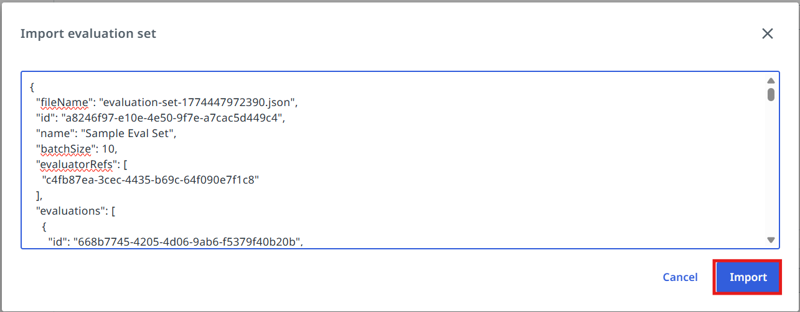
Navigate to the evaluation set and open it.
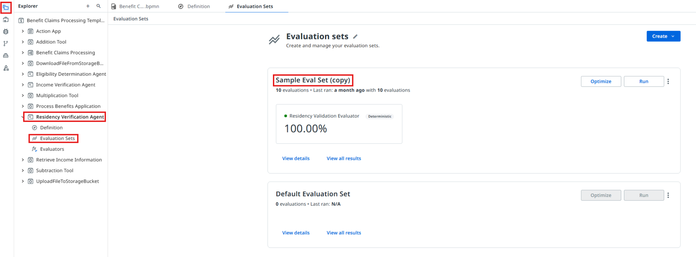
Open the evaluation set and select the Residency Validation Evaluator that we configured earlier.
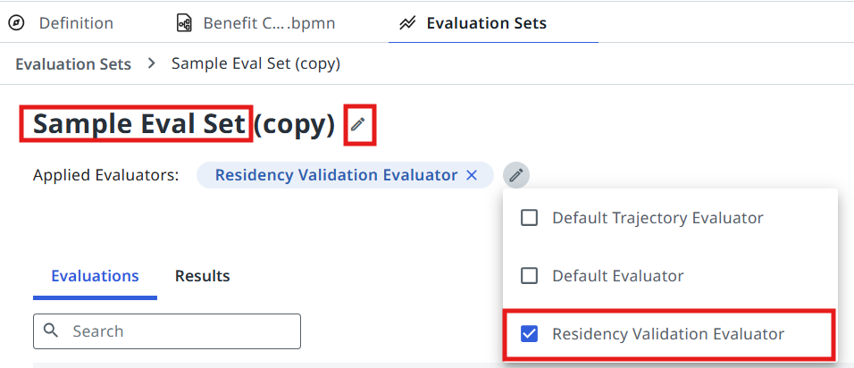
Evaluate the set and discuss the results with the trainer.

Configuring the Agentic Task in Maestro¶
Let's get back to Studio and continue editing our Agentic Process.
10. Point the task at your agent¶
Configure the Residency Verification Agent task to use our freshly prepared AI Agent! This is done in the same way as the Robotic task: pick Start and wait for agent, then search for the agent in your solution.
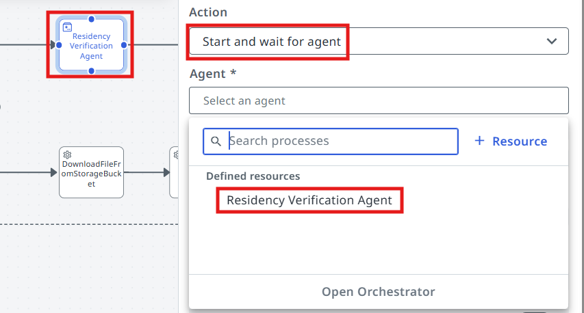
11. Map the inputs¶
Now we need to pick outputs from the previous RPA Task (Process Benefits Application), and add them as inputs to the Agent — here is how you do it in your Agentic task's Settings.
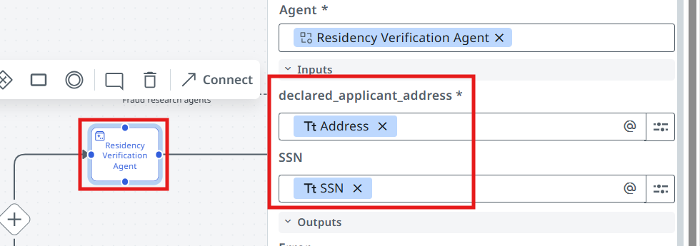
In the end:
- Robot's Address should map into Agent's declared_applicant_address
- Robot's SSN should map into Agent's SSN
12. Run it¶
Process is ready for testing — click on the Debug button! This time we can check the output of the Residency Verification Agent.
Remember the input argument
Pass the value Sample application.pdf for the in_Application argument in the debug panel.
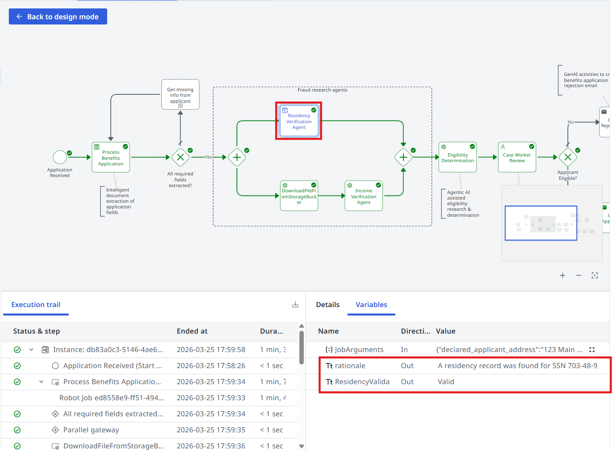
Time to move to the next one!